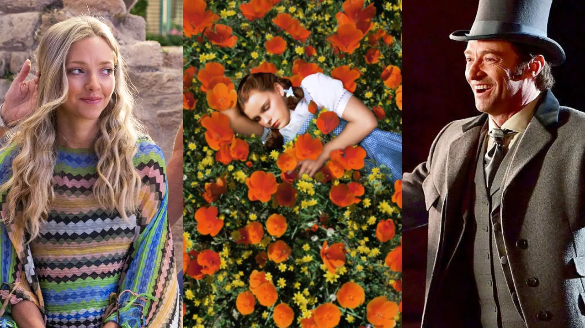

All the dance numbers! All the show tunes! By Lori Keong , Amanda Mitchell , Ineye Komonibo. Published December 20, 2021
Although the traditionally frothy romantic comedies are an easy way to chase away the Sunday scaries, there's nothing more warm and fuzzy than a solid musical movie, complete with singalongs and high-energy dance numbers. Who doesn’t like feeling like the world is capable of bursting into song at any moment? Ever since Judy Garland sang sweetly about returning home in The Wizard of Oz, fans have been hooked. These days, musical movies can sometimes be hit or miss: For as many crazy, joyful, ridiculous-in-the-best-way films like Mamma Mia (don't worry, it's on here) that exist in the world, there's...whatever Cats was (definitely not on the list). But when it's good, it's spectacular. Modern artists have taken the form and played with it, so it doesn't necessarily have to sound and look like a play come to life. That's especially true of the past few years, which have seen icons including Lin-Manuel Miranda giving us some of their best work. From the most classic musicals to underrated gems you may not have heard of, this list has just about everything you could want as a musical fan. Here are 50 iconic musicals spanning more than eight decades that are not to miss, featuring the most epic duets, dance sequences, and jazz hands of all time. music
Okay, yes, the film is technically about Anna Kendrick's Beca as the reluctant a cappella singer, but the true joy of this film is the artistry at work on screen. We catch a glimpse of a multitude of singers and groups with killer harmonies, and the music celebrates that love and energy. There's a reason this spawned two (not as good) sequels.
Lin-Manuel Miranda's hit Broadway musical gets the expansive, artistic film treatment thanks to John M. Chu (Crazy Rich Asians) directing. The joyous melodic energy of characters living in Washington Heights, from those dreaming of a better future to those who have made a life there, is infectious and deeply relatable. And if you're familiar with the musical, there are some additions and updates—including a new song.
Created as a "modern musical" by director Damien Chazelle, this L.A.-based, Oscar-winning film follows an aspiring actress (Emma Stone) and a traditionalist jazz musician (Ryan Gosling) as they struggle to hit the big time, but adorablyhit it off instead.
Ok, yes, the film is technically about Anna Kendrick's Beca as the reluctant a cappella singer, but the true joy of this film is the artistry at work on screen. We catch a glimpse of a multitude of singers and groups with killer harmonies, and the music celebrates that love and energy. There's a reason this spawned two (not as good) sequels.
Keep the Kleenex close at hand during this weepy French musical set in the 19th century. In it, an ex-convict named Jean Valjean takes in an orphan named Cosette after her mother dies. Valjean's former jailer, the police inspector Javert, continues to pursue him as France begins to split before the Paris Uprising of 1832.
This feel-good comedy stars John Travolta and Nikki Blonsky in a story about a teen in the 1960s who loves to dance and wins a spot on a local TV show. The new role catapults her to stardom, and she tries to use her spotlight for good to encourage more diverse casting.
This classical musical reappeared in the news following some eerie conspiracy theories, but we know and love Grease because of the hand-jivin' melodies, the outstanding cast, and the iconic outfit changes: "Tell me about it, stud."
This film is actually inspired by true events and was originally a musical play: High schooler Jamie New wants to be a drag queen, but faces prejudice from classmates, his father, and the world at large. Undeterred, he pushes on with the help of mentor Loco Chanelle (Richard E. Grant). The choreographed song and dance numbers, with Jamie becoming Mimi Me and finding his true self, are gorgeous.
It's not just a meme: This strange, surreal, over-the-top movie also features a number of catchy songs. Gene Wilder has never been better as the wacky and kind of sadistic chocolate factory owner, and the songs about each selfish kid's nasty demise are beyond catchy.
This film popularized the version of "White Christmas" everyone knows, but it's also got a bunch more catchy, underrated tunes and not one but two romances. It was the highest-grossing musical ever at the time, and even though it's now very vintage, it makes for essential viewing during the cold weather.
The classic story of Cinderella and her glass slipper has been told countless times throughout pop culture, but it's not a stretch by any means to say that the 1997 musical film is the single most important iteration of the fairytale ever. Starring Brandy as our heroine and Whitney Houston as her fairy godmother, Cinderella features one of the most diverse casts on the silver screen and marked the first time that little black girls everywhere were able to see themselves as princesses too.
If you're going to watch one biopic, have it be the glorious celebration of Elton John's ascendancy as global pop phenomenon. It's an honest look at the darker parts of fame, including the singer's struggles with substance abuse. But it's also got all the songs you know and love (as well as the story of how John came to write and perform them).
Speaking of musical legends and their greatest hits...Prince stars in a movie loosely based on his life, in which The Kid escapes a bad home life through music. It's basically a vehicle for Prince to play songs like "Purple Rain" and "When Doves Cry," and it's a lasting testament to the late legend.
A coming-of-age tale of a boy who forms a band to impress a girl...and then the band ends up being really, really good. It features remakes of classic songs from Sing Street, Hall & Oates, The Cure, and Duran Duran, as well as some gloriously OTT '80s fashion. What's not to love?
A retooling of the beloved Henson characters (and an Oscar winner for Best Original Song) this stars Amy Adams and Jason Segal as the human counterparts to their fuzzy costars. Muppet fan (and Muppet himself) Walter must help Kermit & co. from the evil Tex Richman. Will they get the band back together and save Muppet Theater? Obviously, yes, but it's super-fun getting there.
But you can't get much better than the classic. There are many good Muppets musicals, including their take on A Christmas Carol, but come on! This one has Kermit the Frog singing the original "Rainbow Connection"! The characters' origin stories! Adventures in Hollywood! It's somehow stuffed with characters, yet perfectly balanced.
A movie, based on a musical, based on a bunch of songs by The Proclaimers. This is the sweet story of two veterans who go home and deal with familial and romantic entanglements. An early vehicle for George Mackay (1917), the film's tender at its core and filled with talented people. Just wait until the characters get to their rendition of "I'm Gonna Be (500 Miles)."
Following students in their time at the High School of Performing Arts in pursuit of—you guessed it—fame, the musical became a smash hit and a cult classic. It didn't shy away from depicting the trials and tribulations of success (and trying to make it in show biz), but the upbeat songs and gorgeous dance sequences are what make this film sing, pun intended.
Is this film completely ridiculous? Absolutely, but it's also a who's who of iconic French actresses having a ball in a twist on the classic murder mystery. The patriarch of a family is found dead, and one of eight women must have done it. Then it turns into a musical with a bunch of super-catchy songs.
A street musician and a Czech immigrant make an unlikely pair in this indie-film-that-could, which nabbed several Oscars and launched a Broadway musical run. You won't find any overproduction or jazz hands in this sparse film, but the musical arrangements from Glen Hansard and Marketa Irglova are gorgeous, and worth listening to in surround-sound.
Chicago's Velma Kelly and Roxie Hart are two of the most badass roles for women in Broadway history. Here, Catherine Zeta-Jones and Renee Zellweger play the jailhouse rivals in this larger-than-life musical about crime, fame, and revenge.
This love it or hate it musical from director Baz Luhrmann reimagines popular songs from modern artists like Elton John and The Police, but centers the story in early 19th century bohemian Paris. The most beautiful courtesan at the Moulin Rouge dancehall (played by Nicole Kidman) and a poor writer (Ewan McGregor) fall in love but have to keep their romance a secret or risk shutting down the cabaret.
There's never a dull moment in this rock musical about a transgender punk performer. Trouble ensues when, on a tour of the U.S., Hedwig runs into a former flame who stole all of her songs.
The cult musical of all musicals, Rocky Horror Picture Show still inspires live renditions in local theaters that recreate the eerie happenings of Dr. Frankenfurter's mansion. In it, a wayward couple, Brad and Janet, get stranded there for one freaky night.
Liza Minnelli takes center stage in this musical film that put her on the map (it swept up eight Oscars in its day). She plays a young American cabaret singer performing at the Kit Kat Klub in Nazi-era Berlin who gets caught up in a love triangle with a British academic and a German playboy.
Adapted from the Broadway musical of the same name, this movie tells the iconic story of a father who tries to keep his five daughters in line with Jewish cultural traditions. He meets resistance and realizes how much his eldest daughters want to marry husbands outside the customs of their faith.
Ah, Babs. Known for its big hit "Don't Rain on My Parade," this comedic musical sees Barbara Streisand in her element as a budding vaudeville singer who works her way up to the big time on Broadway.
Prepare yourself to be completely charmed by Audrey Hepburn's Eliza Doolittle in this modern-day Cinderella story: a working class Cockney girl learns how to speak like a polished aristocrat and pass as a member of high society.
Unless you've been living under a rock, you probably already know what the hills are alive with (music, duh). The Von Trapp family singers and their idyllic life in the Austrian countryside with their winsome governess (clothes made out of curtains! whiskers on kittens!) captured the hearts of multiple generations. This film remains one of the most iconic musicals to date.
Known for its iconic dance scenes with umbrellas, this Gene Kelly film depicts the upheaval in the entertainment industry over the transition from silent films to "talkies" when two silent movie stars join the cast of a musical.
Yet another umbrella-heavy song-and-dance musical, this bittersweet French film follows a young Catherine Deneuve, who works at a boutique selling umbrellas. She falls in love with a mechanic and gets pregnant, but has to move on without him when he gets drafted into the Algerian War.
This love story for the ages tells the tale of Romeo and Juliet, but this time the couple is caught between to rival gangs: the Jets and the Sharks. A gang member falls in love with his rival's sister—played by It-girl of the day Natalie Wood—and trouble brews in the form of many elaborate dance scenes.
This winning Audrey Hepburn and Fred Astaire combination sees a young librarian in Paris caught up in the throes of the colorful American fashion world when she's scouted by a top magazine editor and a famous fashion photographer.
An outstanding cast of Frank Sinatra, Marlon Brando, and Jean Simmons star in this film about a gambler (played by Sinatra) who needs to make some money. He places a bet he thinks is foolproof: That his old acquaintance Sky Masterson (Marlon Brando) won't be able to get the saintly Sergeant Sarah Brown (Jean Simmons) to go on a date with him.
You're probably familiar with this musical's most famous song, "Oh, What a Beautiful Morning," composed by legendary duo Oscar Hammerstein II and Richard Rogers. The plot involves a country girl caught in a love triangle between a farm hand and a cowboy, and drew inspiration from the play Green Grow the Lilacs. There's nothing quite like the movie adaptation.
This Gene Kelly classic tells the story of a former American soldier who remains in Paris after the war to become a painter (how romantic, right?) and falls for a local French girl. The duo becomes a love triangle, though, when a rich heiress starts to show interest in the painter on a more than professional level.
Perhaps the most famous musical ever, it transported audiences to the technicolor land of Oz, filled with flying monkeys and witches and a wizard. Judy Garland plays a wayward girl who's just trying to find her way back home, accompanied by a medley of characters like the Lion, the Scarecrow, and the Tin Man.
This late-seventies musical puts a funky spin on the iconic plot of The Wizard of Oz, giving the classic musical a fun facelift. Starring music legend Diana Ross as Harlem schoolteacher Dorothy, The Wiz is a completely star-studded musical experience; Michael Jackson, Richard Pryor, and Lena Horne are just a few of other the notable cast members!
It's the musical that made you give your succulents a side eye. Rick Moranis and Ellen Greene star in this hilarious movie about a geeky florist shop worker who finds out his Venus flytrap can speak. If you're afraid of going to the dentist, I'd skip this one. It'll only fuel your fears.
You'll remember this as the movie that launched Jennifer Hudson into international stardom, but it's so much more than that. Dreamgirls takes its inspiration from the history of Motown and The Supremes. The story follows a girl group known as The Dreams and their manipulative record executive. Plus, Beyoncé's in it, and we'll watch anything with Queen Bey.
ABBA fans, this one's for you! The film boasts a stellar ensemble cast of Meryl Streep, Amanda Seyfried, Colin Firth, Pierce Brosnan, and Christine Baranski. The plot follows a young future bride who invites three men to her upcoming wedding, with the hope of finding out which one is her father.
If you liked the original Mamma Mia, there's more where that came from! Here We Go Again serves as both a prequel and a sequel, with the plot being set after the events of the first film, but featuring flashbacks to 1979, telling the story of Streep's character's arrival on the island of Kalokairi and the first time she meets her daughter Sophie's three possible fathers. It's the rare sequel that might be better than the original.
Taking its inspiration from the story of P. T. Barnum's creation of the circus and the lives of its star attractions, The Greatest Showman is truly a work of art. The songs are catchy earworms, enough to look past the many artistic licenses they take with Barnum's history. Try not to cry when Keala Settle sings "This Is Me," I dare you.
The fourth (and arguably the best) remake of the 1937 film is co-written and directed by Bradley Cooper and stars none other than Lady Gaga. It's about a hard-drinking musician (Cooper) who discovers and falls in love with a young singer (Gaga), and her rise to stardom. Gaga is a force in this film, delivering a performance that will break your heart. This is not the most "light-hearted" fare, relative to others on this list, but the music is good enough to look past that. Check out content warnings beforehand if you don't know the plot.
This musical, co-written and directed by Bob Fosse, is inspired by his life and his career as a dancer, choreographer, and director. It focuses on Fosse's attempt to edit his film Lenny while simultaneously directing and choreographing the 1975 Broadway musical Chicago, and the women who are trying to save him from himself. You can still see the impact of Fosse's work on modern dance.
The sun will come out tomorrow, and this legendary musical will remind you of that. Set in 1933 during The Great Depression, this musical tells the story of Little Orphan Annie, who lives in New York City and winds up being taken in by America's richest billionaire, Oliver Warbucks. If anything, you'll learn that you're never fully dressed without a smile.
This movie is part homage, part parody. Giselle (Amy Adams) is a Disney Princess who is ejected from the animated land of Andalasia into the live-action world of New York City, and, let us tell you, shenanigans ensue. Adams has some unexpectedly great singing chops, and James Marsden is a true joy as a narcissistic, self-absorbed prince vying for Giselle's heart. Alan Menken and Stephen Schwartz's soundtrack is the best part.
Based on the legendary Broadway musical of the same name, Into The Woods intwines the plots of all of the best fairytales from your childhood—Little Red Riding Hood, Jack and the Beanstalk, Rapunzel, Cinderella, and several others—all in one big magical bow. This film features an ensemble cast of legendary actors like Meryl Streep, Emily Blunt, Chris Pine, Anna Kendrick, and James Corden. The fantasy comes to life in this gorgeously shot musical.
Nothing but love and respect for the first Sister Act (1992), but the sequel might be one of the best musical films of all time. Whoopi Goldberg reprises her role as lounge singer turned nun Sister Mary Clarence, this time helping St. Francis Academy stay open by turning her class of rowdy teenagers into a legit show choir, and a young Lauryn Hill also stars in the film as a moody student with powerhouse vocals. Let's not forget about the choir's incredible remix of "Joyful, Joyful," which, honestly is the most lit rendition of the Christmas class ever to be made.
The year is 2006, and you and your friends are gathered in front of the television. Suddenly Zac Efron appears on the screen, and a loud scream erupts in the living room. Why? You're watching the premiere of High School Musical, that's why! The Disney musical follows the journey of a popular jock who finds his love and his voice, much to the displeasure of his friends and family. HSM was so successfully that it spawned two sequels as well as a number of spinoffs. And yes, we still know the choreography to "We're All in This Together."